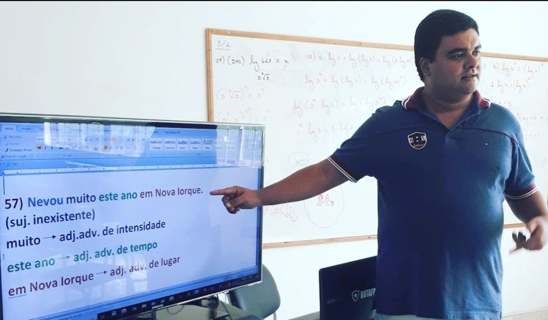

Turmas Presenciais
Todas as matérias em todas as turmas. Aulas presenciais no Educandário Santo Antônio. Valores e vagas pelo WhatsApp.
9º ano · Escolas técnicas
Preparação para Cefet, FAETEC e outras escolas técnicas.
Pré-militar noturno
Preparação para ESA, EEAr e Fuzileiros Navais.
5º ano
Preparatório para o 6º ano: Colégio Militar, Colégio da Polícia Militar e Pedro II.
Reforço escolar
Apoio nas matérias da escola, com acompanhamento de perto.
Onde estamos
Perguntas Frequentes
Tire suas principais dúvidas sobre nossas turmas e metodologia.
Meu filho tem muita dificuldade na base de Matemática. Ele consegue acompanhar?
O curso cobre todas as matérias do edital?
O material didático já está incluso?
Posso assistir a uma aula experimental antes de fechar a matrícula?
Vocês aplicam simulados no estilo das provas reais?
Diário de Classe & Rotina
Acompanhe os assuntos ministrados em sala, vídeos de apoio e apostilas para download.
Raciocínio Lógico · Verdades e Mentiras
Treino intensivo com resolução passo a passo de questões de raciocínio lógico (técnica das suposições) focadas nas provas das escolas técnicas.
Raciocínio Lógico · Verdades e Mentiras
Treino intensivo com resolução passo a passo de questões de raciocínio lógico direcionadas para os concursos militares.
Resolução de Provas Anteriores · IFRJ/2016
Resolvemos diversas questões da prova do processo seletivo IFRJ/2016, reforçando a prática e o estilo de cobrança da banca.
Proporcionalidade · Resolução de Questões PMSP
Treino intensivo focado em Proporcionalidade com a resolução de diversas questões da banca da Polícia Militar do Estado de São Paulo.
Conheça o professor

Didática simples e objetiva, para que todos aprendam, inclusive quem sente que não tem base.
Aulas presenciais com acompanhamento de perto e muita prática com questões no estilo das provas.
Como funciona o curso
Aprender de verdade, e não só decorar fórmulas.
Professor experiente
Prof. Bruno Leal ensina há 29 anos e sabe onde os alunos mais travam.
Questões de provas
Treino com questões no estilo das provas, resolvidas passo a passo.
Todas as matérias
Matemática, Português, História, Geografia, Física, Inglês e as demais matérias cobradas nas provas, no mesmo curso.
Simulados
Pratique e veja a resolução do professor logo após responder.
Aulas demonstrativas
Assista a uma resolução comentada passo a passo pelo Prof. Bruno Leal.
Volume do Paralelepípedo · CMRJ
Resolução detalhada da questão de matemática sobre volume e conversão de unidades (m³ para cm³).
Canal Prof. Bruno Leal
Inscreva-se no nosso canal no YouTube para acompanhar mais resoluções de questões e dicas de estudo.
Ver no YouTube ↗Questões resolvidas
Toque em uma questão para ver o enunciado e a resolução passo a passo do professor.
Valor total a partir de uma porcentagemProfessor de Matemática – SC/2023
Em uma feira, Maria gastou 40% de todo o dinheiro que tinha em sua carteira. Se o valor gasto por Maria foi de R$ 32,00, então é correto afirmar que o valor total que ela tinha na carteira era de:
Desconto aplicado sobre o preço de vitrineIBFC/2023
Paulo foi a uma loja e pagou R$ 238,00 por um produto, já incluso 15% de desconto sobre o preço do produto exposto na vitrine. Nessas condições, o valor do desconto atribuído ao preço do produto foi de:
Descontos sucessivosAnalista – SAEB – IBFC/2023
O preço de um produto na vitrine estava anunciado com 20% de desconto à vista, porém Mariana obteve outro desconto de 10% sobre o valor do produto já descontado os 20%. Nessas condições, o desconto total obtido por Mariana na compra do produto foi de:
Porcentagem de uma porcentagemProfessor de Matemática – AC – IBFC/2023
Num aquário 12% dos peixes foram afetados por uma doença. Dos peixes atingidos por essa doença, apenas 20% deles morreram. A porcentagem de peixes que morreu por causa dessa doença é:
Aumentos e desconto sucessivosProfessor de Matemática – Camaçari – BA/2024
No preço P de um determinado produto foram aplicados, em dois meses consecutivos, dois aumentos sucessivos de 20% e, no terceiro mês, um desconto de 40%. Considerando regime de capitalização composto, qual foi a variação do preço final em relação ao valor original P?
Provas e apostilas para download
Provas anteriores e materiais de estudo do Prof. Bruno Leal.
E-book · Verdades e Mentiras
Raciocínio Lógico: teoria completa do método das suposições, 5 questões resolvidas e exercícios de fixação.
Abrir e-bookPortuguês – Aula 1 (Soluções)
Análise Sintática: 57 exercícios resolvidos sobre sujeito, objetos, adjuntos e apostos em PDF.
Abrir apostilaMais provas em breve
Estamos organizando outros anos e apostilas. Quer ser avisado quando forem liberados?
Quero ser avisado